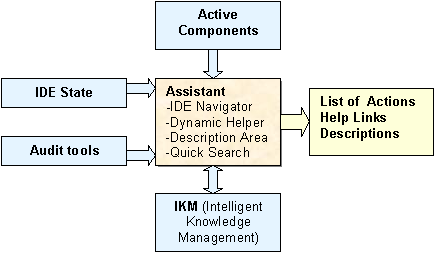
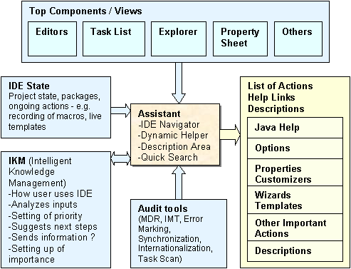
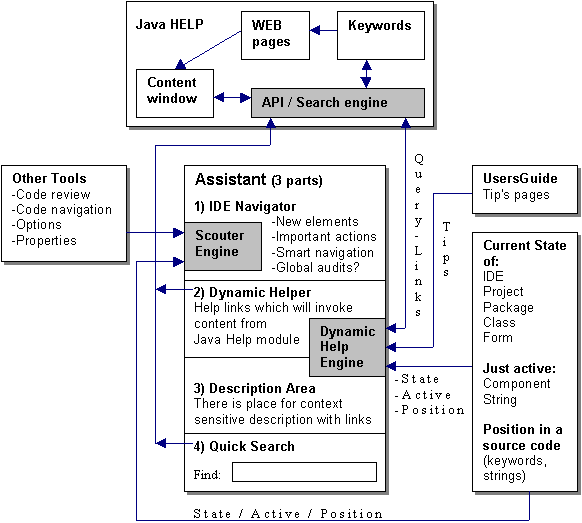
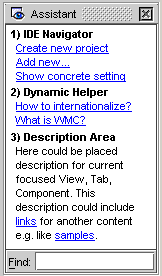
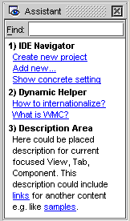
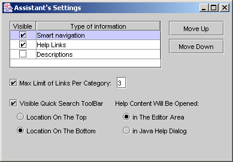

Help System is one of the essential parts of a serious application. The main goal of
integrated help system is to support the users and help them to achieve successful results
in the progress of developing software. The way of help integration could play important
role in product competition. The main purpose of this document is to describe NetBeans
Help System improvements.
In NetBeans absences dynamic help which is part of few concurrent IDEs. In future we
should improve this site of help integration. Help should provide more context sensitive
information to the user. Draft of
assistants proposal covers this part of vision. It would be big step toward user. It
will involve new implementation work because this is not part of JavaHelp JSR97. Majority
will be implemented as a new module called Assistant and extension of existing JavaHelp
API is needed as well.
Assistant could be useable for beginners and intermediate users that have started work with IDE mainly. It has navigation and help function primarily, which will be context sensitive. This dynamic tool depends on IDE state (e.g. nonexistent Project yet), active component (e.g. not I18N string in Form editor), actual position in this component (e.g. this field hasn't been used yet or help link for current keyword under carret) and outputs from Audit tools (e.g. info about too many methods in class). There exists IKM (Intelligent Knowledge Management) which should analyze inputs and then will prioritize content of Assistant. Content of Assistant will include these sections with more kind of contents:

Figure 1...Main overview of Assistant inputs, outputs and content

Figure 2...Detail of inputs and outputs
Design of Assistant
Additional part of Assistant is Quick Search which could be on the top or bottom of Assistant UI. It contains Input area for text, which user would like to search. Then it will be found and showed in new window (probably in new Java Doc Search TAB ?) by press enter key.

Figure 4...Idea about content of Assistant
 
Figure 5...Draft design of Assistant

Figure 6...Draft design for Customize